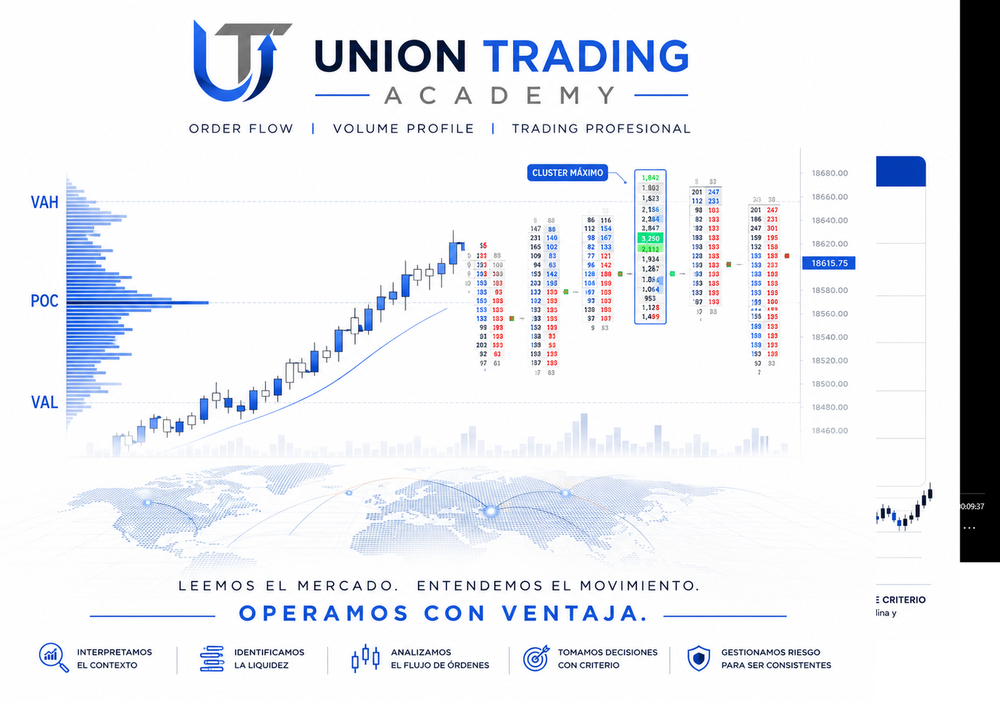
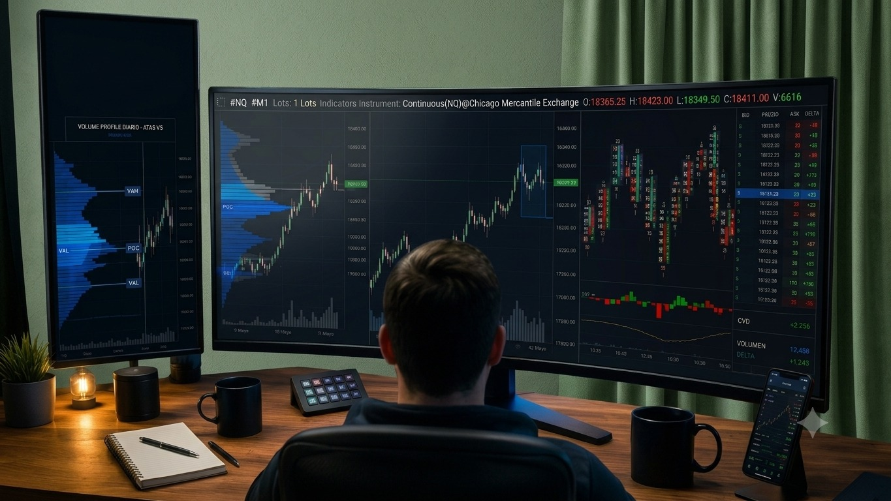
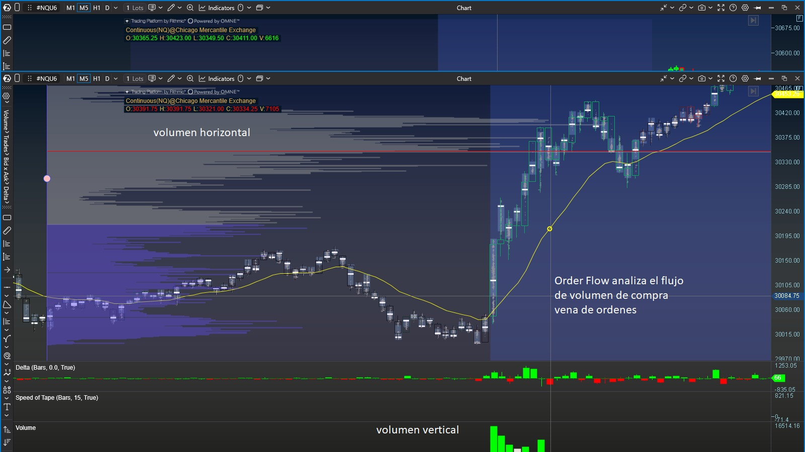

No vendemos señales ni cursos masivos. Te enseñamos a interpretar la actividad real del mercado con Order Flow y Volume Profile, mediante mentoría personalizada, hasta que desarrolles tu propio criterio operativo.
La academia especializada para traders que buscan consistencia.

«La mayoría de los traders no pierden por falta de una estrategia; pierden porque nunca aprendieron a entender qué está ocurriendo realmente en el mercado.»
La industria tradicional te vendió indicadores con retraso, patrones geométricos memorizados y promesas irreales de riqueza rápida. En Union Trading Academy cerramos esa brecha.
Nuestro objetivo es que operes bien informado, con un sistema estructurado, haciendo menos operaciones y mejor seleccionadas — y que tu mentor te acompañe hasta convertirte en un trader independiente: autonomía y criterio para tomar tus propias decisiones con confianza.

La mayoría de los traders no pierde por falta de esfuerzo. Pierde porque toma decisiones sin un proceso objetivo para interpretar el mercado.
El problema: nadie te ha enseñado a leer el mercado.
En Union Trading Academy no prometemos rentabilidad; te ayudamos a lograr tu rentabilidad. Nuestro compromiso es enseñarte un proceso estructurado para interpretar el mercado mediante Order Flow y Volume Profile, desarrollar criterio profesional y ejecutar tus decisiones con objetividad y disciplina.
Un sistema integral de análisis para descifrar la estructura — hasta la microestructura — del mercado de futuros (NASDAQ / S&P 500) en plataformas como ATAS y NinjaTrader. Lo aprendido se puede operar en cualquier plataforma, incluidas MT4 y MT5.
Identificación de zonas de alto valor, perfiles compuestos y estructura de mercado previa a la sesión.
Detección de agresión, absorción e imbalances en tiempo real dentro de las velas, para confirmar intenciones institucionales.
Ejecución matemática del riesgo, preservación del capital y acompañamiento emocional en sala de trading en vivo.

Volumen horizontal, flujo de órdenes y delta: la actividad real de compradores y vendedores.
Para traders en nivel intermedio o avanzado: aprende a interpretar la liquidez que mueve el mercado y a convertirla en decisiones operativas.
Trabajamos a tu lado de forma directa hasta que:
Construyas y optimices tu propio Plan de Trading personalizado.
Seas capaz de justificar técnicamente cada entrada y salida con el Método PIM™.
Completes la auditoría de tu bitácora operativa y demuestres disciplina estricta en la gestión del riesgo.
Mantenemos cupos reducidos para garantizar la mentoría 1 a 1 y la revisión directa de operaciones.